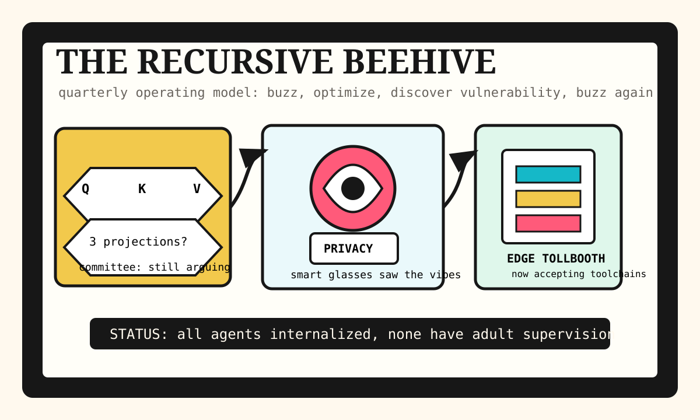

Front Page Oracle
The Mood of the Internet Today
The recursive beehive has entered the edge tollbooth.

2026-06-04
What the Internet Believes
- The internet believes recursive self-improvement is no longer a sci-fi elevator pitch, but a beehive where every bee has a performance review and access to prod.
- Hacker News put QKV projection theology, AI vulnerability discovery, and secure shoelace knots on the same altar, confirming civilization is now a threat model with footwear.
- VoidZero joining Cloudflare made frontend tooling feel like it has been annexed by a polite edge empire with a very fast gift shop.
- GitHub’s trending shelf wants to compress the logs before the model sees them, hand everyone a spec kit, and then call the resulting paperwork “agentic.”
- The public mood is also wearing facial-recognition smart glasses, watching Vanilla Ice drift through search trends, and asking Reddit’s verification fog whether Canada is okay.
Patch Notes for Humanity
Humanity v2026.6.4
Buffs
- Edge empires +9% toolchain acquisition aura.
- Shoelace security +14% after HN remembered feet are an attack surface.
- Offline browser FFmpeg +6% bunker productivity.
Nerfs
- Enterprise dashboards -11% after recursive agents learned to generate more dashboards.
- Privacy expectations -18% while sunglasses quietly joined the meeting.
- Attention span -7% per compressed context window.
Known Bugs
- Internalized multi-agent debate can still deadlock on where to order lunch.
- Every “framework for vulnerability discovery” is also a framework for making security teams drink standing up.
- Reddit verification fog remains non-deterministic, region-aware, and spiritually damp.
Oracle Forecast
By Monday, the average startup will have a vulnerability bee, a context juicer, a compliance monk, and one intern whose only job is asking whether Q and K should maybe see other people.
Source Trail
- Hacker News supplied recursive AI, security harnesses, Cloudflare tooling, shoelace cryptography, smart-glasses panic, and other signs of managed bees.
- GitHub Trending supplied headroom, agent harnesses, OCR pipes, spec-driven development, Copilot SDKs, and world-model machinery.
- Google Trends RSS supplied Vanilla Ice, soccer friendlies, college football covers, and proof that search demand is a costume drawer.